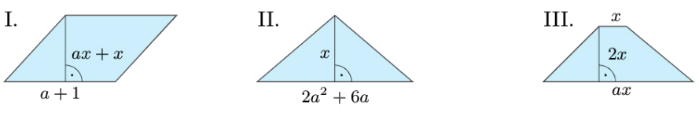

6. Oblicz wartość podanego wyrażenia, jeśli 6x + 9y = 12.
a) 60x + 90y b) 12x + 18y c) 2x + 3y d) x + ⅔ y
7. Dopasuj wyrażenie opisujące pole figury do odpowiedniej figury.
A. ax(a + 3) B. x ² (a + 1) C. x(a + 1) ²
Niech n, n + 1 i n + 2 będą kolejnymi liczbami naturalnymi.
Ich suma S jest równa:
n + (n + 1) + (n + 2) = 3n + 3 = 3 (n + 1)
Suma S została przedstawiona w postaci iloczynu, którego
jednym z czynników jest liczba 3, a drugim liczba natural-
na n + 1. Zatem S jest podzielna przez 3
8. Przeczytaj podane obok uzasadnienie stwierdzenia, że suma trzech kolejnych liczb naturalnych jest podzielna przez 3. Następnie uzasadnij, że:
a) suma pięciu kolejnych liczb naturalnych jest podzielna przez 5,
b) suma trzech kolejnych liczb parzystych jest podzielna przez 6,
c) suma trzech kolejnych liczb nieparzystych jest podzielna przez 3.
9. Uzasadnij, że jeśli dwie liczby są podzielne przez 3,
to suma ich kwadratów jest podzielna przez 9.
10. Uzasadnij, że suma dowolnej liczby dwucyfrowej i liczby powstałej z
przestawienia cyfr tej liczby jest podzielna
przez 11 (np. 23 + 32 = 55,
a liczba 55 jest podzielna przez 11).
Powtórzenie
11. Wyłącz przed nawias czynnik liczbowy oraz zmienną x w jak największej potędze.
a) 9x ³ - 6x ² + 15x b) 18x ⁴ + 24x ³ - 12x ² c) 8x ⁵ - 16x ⁴ + 12x ⁶
12. Wyłącz przed nawias czynnik 3x² lub 2xy²
a) 9x³ + 3x²y² c) 6x²y² - 2xy² e) 6x³y³ - 6x⁴y⁴ + 12xy²
b) 3x⁴y² - 6x²y d) 8xy⁵ + 12x²y⁴ f) 6x⁴y² + 6x³y² - 18x⁴y
13. Wyłącz przed nawias czynnik liczbowy oraz wszystkie możliwe zmienne w jak najwyższej potędze.
a) 9x⁴y³ - 12y⁵ b) 8a²b² + 4a³b⁴ c) 8p³q³ + 4p⁴q⁴ - 6p²q³
2.6 Wyłączanie jednomianu przed nawias .77